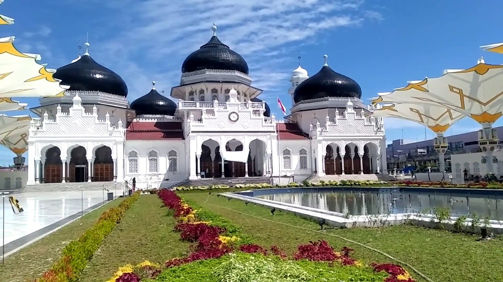
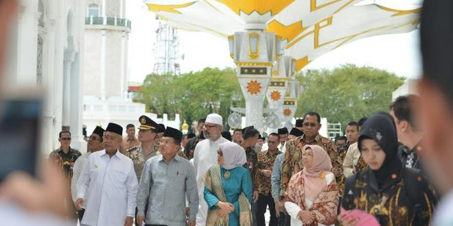

Masjid Raya Baiturrahman
ditulis oleh Warisan Budayapada 1 April 2024
Masjid Baiturrahman merupakan salah satu masjid yang memiliki makna dan sejarah penting di Surabaya, Jawa Timur, Indonesia. Berikut adalah deskripsi lengkap mengenai Masjid Baiturrahman:
Sejarah: Masjid Baiturrahman didirikan pada tahun 1995 sebagai bagian dari upaya untuk memenuhi kebutuhan spiritual dan keagamaan masyarakat di sekitar wilayah Surabaya Barat. Dengan arsitektur yang megah dan desain yang elegan, masjid ini menjadi salah satu masjid terbesar dan paling menonjol di Surabaya.
Arsitektur: Masjid Baiturrahman memiliki desain arsitektur yang menakjubkan, dengan dominasi warna putih dan kubah emas yang mengkilap. Arsitektur masjid ini mencerminkan campuran antara gaya arsitektur Timur Tengah dan tradisional Indonesia, menciptakan suasana yang khas dan indah.
Fungsi: Selain sebagai tempat ibadah utama bagi umat Muslim di sekitar Surabaya Barat, Masjid Baiturrahman juga berfungsi sebagai pusat kegiatan keagamaan dan sosial masyarakat. Masjid ini sering digunakan untuk pelaksanaan shalat lima waktu, ceramah agama, pengajian, dan berbagai acara keagamaan lainnya.
Lokasi: Masjid Baiturrahman terletak di kawasan Surabaya Barat, tepatnya di Jalan Raya Darmo No. 45, Surabaya. Lokasinya yang strategis membuat masjid ini mudah diakses oleh masyarakat sekitar maupun wisatawan yang ingin mengunjungi dan mengagumi keindahannya.
Signifikansi: Masjid Baiturrahman bukan hanya menjadi tempat ibadah, tetapi juga menjadi simbol penting bagi masyarakat Surabaya. Dengan kehadiran masjid ini, masyarakat Muslim di Surabaya dapat melaksanakan ibadah dengan khusyuk dan tenteram, sambil mengingat nilai-nilai spiritual dan keagamaan yang diwariskan oleh nenek moyang mereka.
Masjid Baiturrahman adalah salah satu bagian dari warisan budaya dan keagamaan yang penting bagi masyarakat Surabaya. Dengan keindahan arsitektur dan nilai-nilai spiritualnya, masjid ini terus menjadi tempat yang dihormati dan dikagumi oleh semua orang yang mengunjunginya.